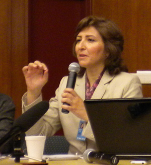

پذيرش > تریبون > اهل کدام کشور هستی / فرانک فرید


 اهل کدام کشور هستی / فرانک فرید اهل کدام کشور هستی / فرانک فرید
21 اسفند 1388 - - نسخه قابل چاپ
متن سخنرانی فرانک فرید در نشست فعالان حقوق زن در نیویورک
تغییر برای برابری -
"اهل کدام کشور هستی ؟ ؟ Where are you from"
"آیا قومیت می تواند عامل مهمی در مبارزه زنان برای دستیابی به حقوقشان باشد؟"
وقتی که در مدرسه راهنمایی درس انگلیسی می خواندیم، (Where are you from )سوال جالبی به نظرم می رسید. من خودم را خارج از کشورم تجسم می کردم که به آن با غرور پاسخ می دهم، اما این تصویر معصومانه، در مواجهه با تبعیض های متفاوت خدشه دار شد. وقتی _به عنوان یک زن_ در محیطی بزرگ می شوی من به عنوان یک زن در محیطی بزرگ شدم که تبعیض های مختلفی وجود داشت که واقعیت های این تبعیض تغییرم دادند، تبعیض هایی که بر هم تأثیر می گذارند؛ تو را شکل می دهند، در هم می ریزنند و شکلی دوباره می دهند؛ در قالب می ریزندت، دوباره قالبت را می شکنند، قالبی نو برایت می سازند، تا به حدی که دیگر نمی دانی واقعن که هستی!
حضور یک زن از خاورمیانه در این کنفرانس گویای برخی تبعیض های جنسیتی هست. از طرفی شنیدن نام ایران می تواند در ذهن شما تداعی گر نقش شجاعانه ی زنان در توسعه جامعه و نیز ارتقاء موقعیت شان در جامعه و زندگی خصوصی آنها باشد. احتمالن شما با جنبش رو به رشد زنان، در جامعه ای با نگرش ها و سنتهای مرد سالار، حقوق نوشته و نانوشته زن ستیز و قوانین ضد زن آن آشنا هستید. اما این همه ی ماجرا نیست! نام یک کشور می تواند گویای برخی مسائل آن باشد، در حالی که برخی دیگر همچنان پوشیده و ناشناخته باقی می مانند.

برای رسیدن به درکی درست از تبعیض قومیتی، به عنوان عاملی بازدارنده در تلاش زنان برای رسیدن به حقوق شان، لازم است نگاهی کلی به موضوع داشته باشیم.
ایران کشوری با بیش از 70 میلیون جمعیت با فرهنگها، زبانها، قومیت ها و مذاهب گوناگون است. گفته می شود قومیت ها 65% این جمعیت را تشکیل می دهند که همه آنها تحت سلطه ی زبان و فرهنگ یک اقلیت قرار گرفته اند. اِعمال این سیاست از 85 سال پیش و هم زمان با روی کار آمدن رژیم پهلوی شروع شده و ادامه دارد.
آذربایجانی ها با نزدیک به یک سوم جمعیت کشور به همراه دیگر قومیت ها یعنی لرها، کردها، عرب ها، بلوچ ها، گیلیکی، مازندرانی ها، ترکمن ها و عشایری نظیر قشقایی ها و بختیاری ها جزو اکثریت نامبرده هستند که از حقوق اقتصادی، اجتماعی، مدنی، فرهنگی و سیاسی خود محروم و به حاشیه رانده شده اند.
قومیت هایی که زبان آنها فارسی نیست حتی حق تحصیل به زبان مادری خود را ندارند و برای همه آنها تنها یک زبان رسمی وجود دارد. به واسطه نداشتن همین حق اولیه، زنان متعلق به قومیت ها در کمترین حد ممکن قادر به بیان و ابراز وجودِ خود در جامعه هستند و یا اینکه این زنان برای خلاصی از تبعیض بیشتر، از زبان مادری خود صرف نظر می کنند.
با این زمینه حال معلوم می شود که این زنان، هم در مقام یک زن در جامعه پدرسالار و هم به عنوان قومیِت های به حاشیه رانده شده، با چالشهای پیچیده تری در دستیابی به حقوق بشر مواجه اند.
تبعیض جنسیتی در چنین محیطی، محدودیت بیشتری برای آنها در دسترسی شان به منابع اقتصادی، سیاسی، اجتماعی، حقوقی و رسانه ها ایجاد می کند.
برای مثال نابرابریهای جنسیتی نظیر نداشتن حق طلاق، در زندان شهر من تبریز،به افزایش تعداد زنانی که دست به همسر کشی زده اند، افزوده است. "خدیجه" یکی از همین زنان است که بعد از کشتن شوهر خود دچار روان پریشی شده و گمان می کند شوهرش هنوز زنده است و مدام تکرار می کند :" این بار دیگر طلاق می گیرم!"
در کنار این تبعیض جنسیتی، با افزودن دیگر عوامل تبعیض آمیز مثل فقر، زندگی در مناطق روستایی و متعلق بودن به قومیتی تحت فشار و ... می توان به موانع متعددی که این زنان با آن مواجهند پی برد.
مثل "راحله" از یکی از روستاهای آذربایجان که در سن 14 سالگی تن به ازدواج اجباری داد. او هم مثل بسیاری از زنان در معرض انواع خشونت علیه زنان مثل کتک خوردن، تجاوز همسر و سایر رفتارهای غیر انسانی قرار گرفت. همین رفتارهای خشونت آمیز و بی حرمتی، از اول یک قاتل ساخت، راحله بعدن اعدام شد. وکیل تسخیری راحله به او می گفت که او باید از خودش "دفاع" کند. در حالیکه او واقعن نمی دانست معنی کلمه "دفاع" در زبان فارسی چیست!
علاوه بر معضلات مشترکی که همه جامعه با آن دست و پنجه نرم می کند، قومیت ها با شرایطی مواجهند که موجب عقب راندن و اعمال ستم بیشتر بر آنها می شود. البته، بسته به میزان این عقب راندگی بر برخی از قومیت ها، موقعیت آنها بدتر هم می شود. برای مثال، عامل مذهب در میان سایر گروههای مذهبی مبنای نابرابری و محرومیت بیشتر آنها می شود. تنشهایی که در منازعه با همه ی این نابرابریها، بی عدالتی ها و تبعیضهای ریشه دار پیش می آید، موجب می شود زنان خشونت بیشتری را در مناطق پرتنش تحمل کنند.
خودکشی زنان نسبت به مردان چهار برابر و نیم بیشتر است و رده چهارم را در جهان دارد. اما خودسوزی که فجیع ترین شکل خودکشی است در میان قومیت ها مثل کردها و لرها بیشتر متدوال است. و نیز قتل های ناموسی که غالبا عاملان آن مجازات نمی شوند.
یکی از مشکلات کمتر شناخته شده ی زنان در میان برخی قومیتها و برخی مناطق، ختنه دختران هست.
گزارشات فعالان حقوق زنان در مناطق عقب مانده و فقیر مثل سیستان و بلوچستان حاکی از اجبار دختران به ازدواج های زودهنگام با مردان پیر در مقابل گرفتن پول، ازدواج های ثبت نشده در دفاتر رسمی، اعتیاد و غیره است. در این منطقه نیز مانند مناطق عرب نشین مثل خوزستان، هنوز مسائل ابتدایی مثل عدم دسترسی به بهداشت و آب آشامیدنی از مشکلات عمده زنان است.
مهاجرت از همه مناطق قومیت نشین بسیار صورت گرفته و می گیرد. بخصوص مردان برای یافتن کار، محل سکونت خود را ترک می کنند و تأثیرات منفی مهاجرت در این مناطق، و نیز بر زنان و خانواده ها عواقب زیادی دارد.
شکاف عمیق و روزافزون بین مناطق مرکزی کشور، از جمله تهران با 15 میلیون جمعیت، با بقیه مناطق، موجب ایجاد تنش ها و عدم وجود درک مشترک بین ساکنین آن ها شده است.
نژاد، قومیت، جنسیت، زبان و فرهنگ، طبقات اجتماعی، مذهب و منطقه ی سکونت و عدم توانایی و ... جزو عواملی هستند که نابرابری و تبعیض ایجاد می کنند. اغلب زنان ما، با بیشتر این تبعیضها مواجهند و در شرایط پیچیده ی برآمده از این نابرابریها، زنان اعتماد به نفس خود را از دست می دهند و خود را در هم شکسته می یابند.
قومیت ها نه تنها به وسیله صاحبان قدرت سرکوب می شوند، بلکه مشکلات آنها را بیشتر روشنفکران نیز در حوزه توجه خود قرار نمی دهند.بنا بر این، توجه به تبعیض قومیتی در هر دو سطح ملی و منطقه ای از ضروری ترین مسائل است
از یک سو به کنشگران حقوق زنان در این مناطق انگِ "فعالیت سیاسی" و "تجزیه طلبی" زده می شود؛ از طرف دیگر، زنان در جنبشهای هویت طلبانه که در این مناطق جریان دارد، توسط برخی مردان اقتدارگرا و فعال در این جنبشها، از نقشهای تصمیم گیرنده دور نگه داشته می شوند. اما با وجود تمامی شرایط مذکور، کنشگران حقوق زنان آذربایجان هم مانند سایر زنان فعال در دیگر نقاط کشور، در رسیدن به حقوق بشر مصممند.
آنها طی 15 سال اخیر نیز، مانند گذشته از هر فرصتی برای پیشبرد جنبش زنان در رسیدن به حقوق خود و ایجاد موقعیت برای فعالیت استفاده کرده اند؛ برای بیان و ابراز خود به نوشتن روی آورده اند، به خصوص خواندن و نوشتن به زبان مادری خود را تجربه می کنند؛ مشارکت آنها در همه جنبه های زندگی اجتماعی و در فعالیت های اجتماعی بیشتر شده است. آنها همچنان بر حقوق خود پافشاری می کنند ، چنان چه بر سایر ارکان حقوق بشر و حاضر نیستند از هیچ یک از آنها صرف نظر کنند.
ارسال به
بالاترین
،
توییتر
،
فریندفید
،
فیسبوک
در همين بخش :
 دهمین دورۀ مراسم تندیس صدیقه دولت آبادی ۱۳۹۲ دهمین دورۀ مراسم تندیس صدیقه دولت آبادی ۱۳۹۲
کارت پستالهایی به بهانهی هشت مارس و به یاد همهی مبارزین راه برابری
بیانیه بیش از 350 تن از مدافعان حقوق زنان به مناسبت روز جهانی زن؛ زنان هر روز فرودستتر میشوند
لباسی که برای تن ما دوخته اند! /اعظم بهرامی
چالشها و چشمانداز فعالیت مدنی زنان
ديگر بخش ها :
طرح یک میلیون امضا
|
مقالات
|
سایت نوشته ها
|
اخبار
|
گزارش كمپين
|
گفت و گو
|
علیه سکوت
|
كوچه به كوچه
|
نامه های شما
|
گزارش ویژه
|
گفتگو با اعضا
|
ویژه سالگرد کمپین
|
تصویر برابری
|
دل آرام علی
|
تریبون
|
مقالات
|
تاریخ شفاهی
|
خارج از چارچوب
|
کتابخانه
|
درباره کمپین
|
کمپین در شهرها
|
کمپین در بند
|
صدای تغییر
|
ویژه 22 خرداد
|
لایحه حمایت از خانواده
|
گالری
|
عشا مومنی
|
امیر یعقوبعلی
|
خدیجه مقدم
|
راحله عسگری زاده و نسیم خسروی
|
پروین اردلان،جلوه جواهری، مریم حسین خواه، ناهید کشاورز
|
زینب پیغمبرزاده
|
سعیده امین، سارا ایمانیان، محبوبه حسین زاده، ناهید کشاورز و همایون نامی
|
احترام شادفر
|
نسیم سرابندی زاده،فاطمه دهدشتی
|
وبلاگ مهمان
|
پرونده خرم آباد
|
دستگیری ها
|
مریم مالک
|
پرستو اللهیاری
|
مهرنوش اعتمادی
|
سمیه رشیدی
|
Other Languages
|
همراهان
|
«فراخوان کمپین ده روز با بهاره هدایت»
| English
|